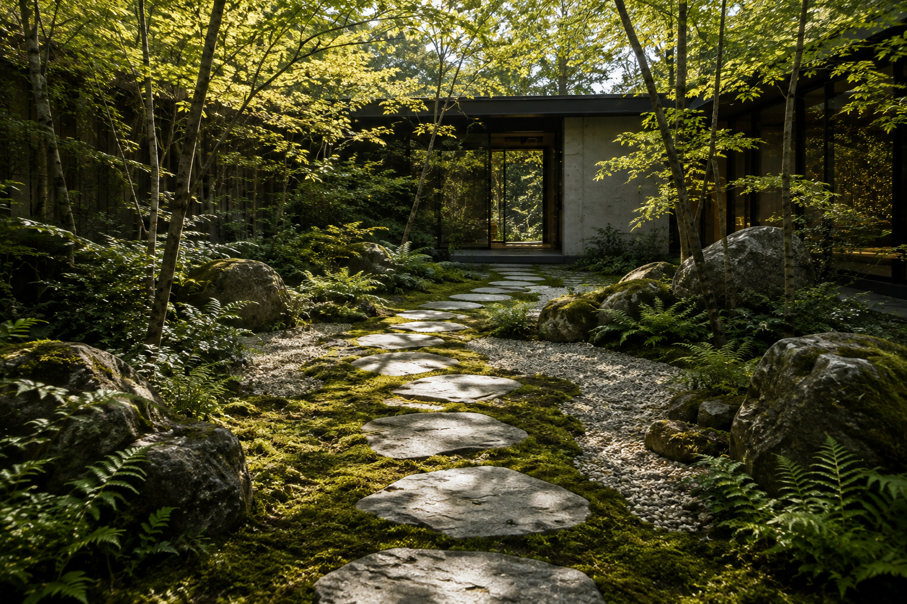
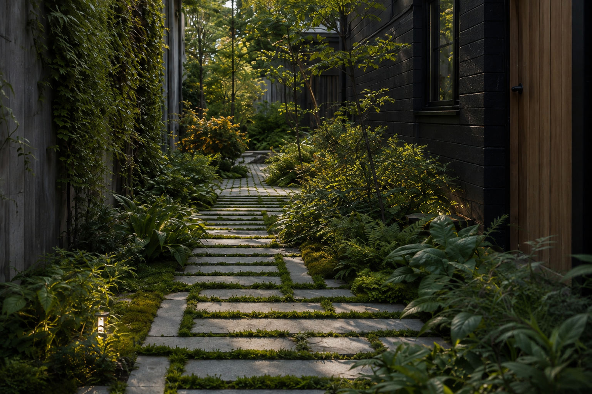
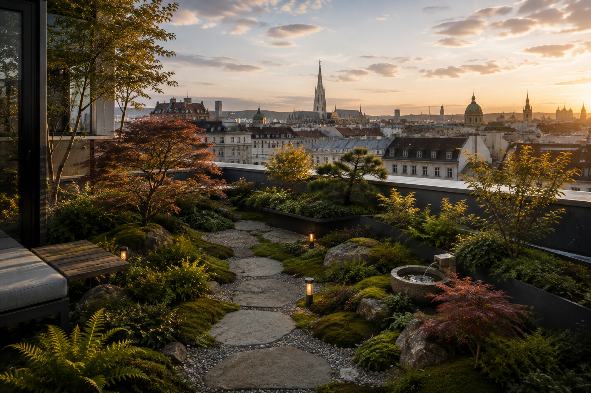
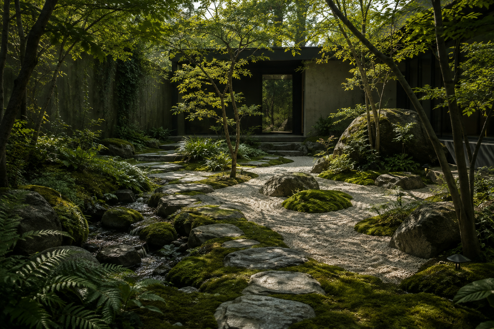
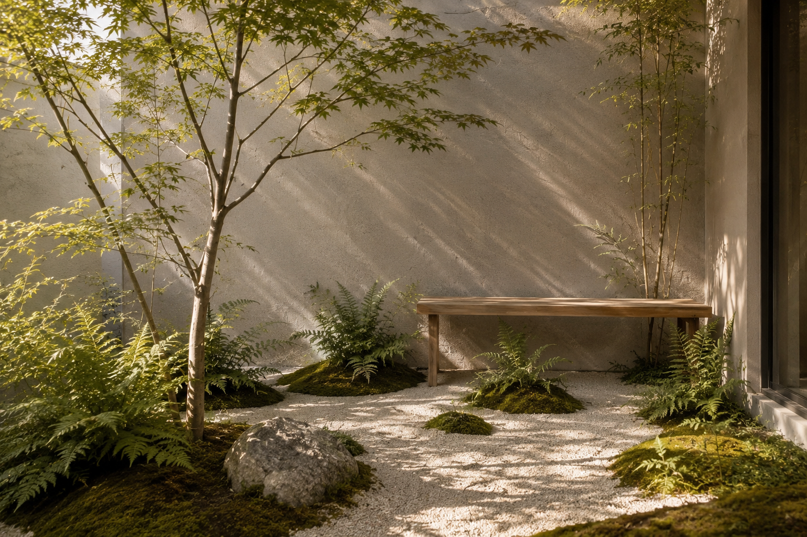

Studio für ökologische Landschaftsgestaltung · Wien
MICROHABITAT
Absichtsvolle Natur.
01 — Haltung
Wir gestalten ökologische Gärten und lebendige Mikro-Ökosysteme.
Räume aus Pflanze, Stein, Wasser, Schatten und Zeit — für Wien und darüber hinaus.
Zum Konzept ↗
02 — Räume
Gestaltungsbereiche
-
01Gärten
-
02Innenhöfe
-
03Dachterrassen
-
04Vertikale Begrünung
-
05Indoor Gardening


